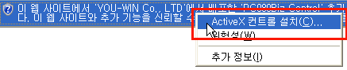
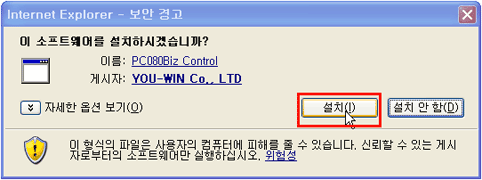
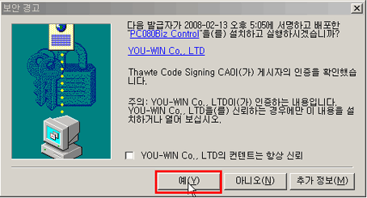

| 설치방법 1. 아래와 같이 화면상단의 노란색 알림 표시줄을 클릭하여 [ActiveX 컨트롤 설치] 선택해 주세요!  2. 아래와 같이 프로그램 설치 확인창에서 [설치]를 클릭해 주세요!  만약 설치 확인창이 나타나지 않으면 여기를 클릭해 주세요! |
| 설치방법 1. 아래와 같이 프로그램 설치 확인창에서 [확인]을 클릭해 주세요!  만약 설치 확인창이 나타나지 않으면 여기를 클릭해 주세요! |
| |
만약, 메신저폰이 자동으로 설치되지 않으면 여기를 클릭하여 수동으로 설치해 주세요! |